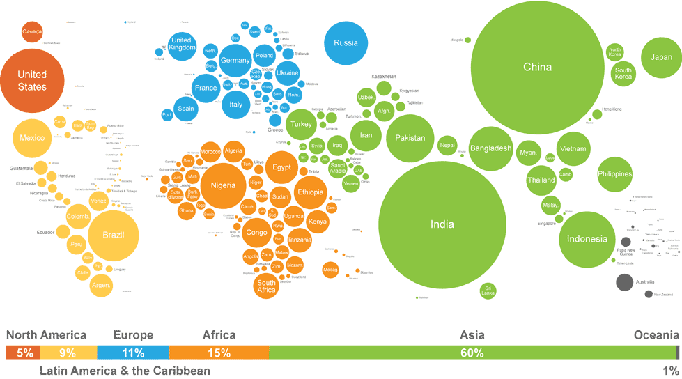

Een tag cloud of data cloud, is een visuele voorstelling van het belang van een term, meestal in een website.
Het aantal keren dat die term voorkomt wordt dan voorgesteld door de lettergrootte en/of de kleur van het woord. Hiernaast zie je bijvoorbeeld een tag cloud die het aantal inwoners per land weergeeft
arrTags . Maak er gebruik van om een eenvoudige tag cloud te produceren in het element #tagContainerspan element aan en positioneer dat absolute in de container.Math.random() om een willekeurige plaats, zowel vertikaal als horizontaal, te genereren binnen de container.Math.rand() object